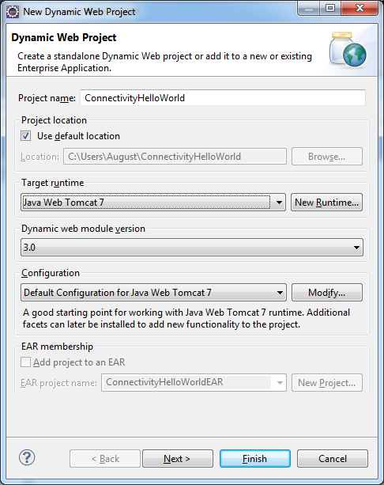
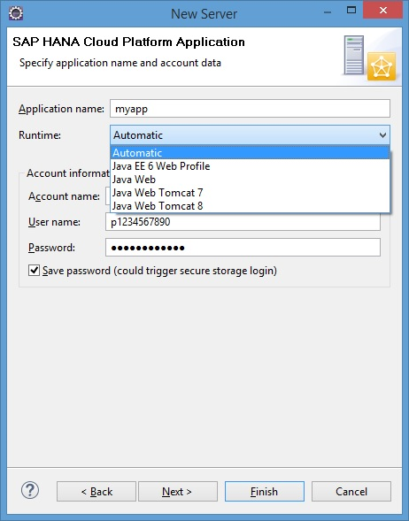

Consuming Internet Services (Java Web Tomcat 7)
This step-by-step tutorial demonstrates consumption of Internet services using HttpURLConnection. The tutorial also shows how a connectivity-enabled Web application can be deployed on a local server and on the cloud.
The servlet code, the web.xml content, and the destination file (outbound-internet-destination) used in this tutorial are mapped to the connectivity sample project located in <SDK_location>/samples/connectivity. You can directly import this sample in your Eclipse IDE. For more information, see Importing Samples as Eclipse Projects.
Go through the relevant steps:
You have downloaded and set up your Eclipse IDE, SAP Cloud Platform Tools for Java, and SDK.
For more information, see Setting Up the Development Environment.
- Open the Java EE perspective of the Eclipse IDE.
- From the Eclipse main menu, choose
 File
File  New Dynamic Web Project
New Dynamic Web Project  .
. - In the Project name field, enter ConnectivityHelloWorld .
- In the Target Runtime pane, select Java Web Tomcat 7 as the runtime you want to use to deploy the application.
- In the Configuration pane, leave the default configuration.
- Choose Finish to finalize the creation of your project.

- From the ConnectivityHelloWorld context menu, choose New Servlet .
- Enter hello as the Java package and ConnectivityServlet as the Class name and choose Next.
- In the URL mappings field, select /ConnectivityServlet and choose Edit.
- In the Pattern field, replace the current value with just
"/". In this way, the servlet will be mapped as a
welcome page for the application.

- Choose Finish so that the ConnectivityServlet.java servlet is created and opened in the Java editor.
- Go to ConnectivityHelloWorld WebContent WEB-INF and open the web.xml file.
- Choose the Source tab page.
- To consume connectivity configuration using JNDI, you need to define the
ConnectivityConfiguration API as a resource in the
web.xml file. Below is an example of a
ConnectivityConfiguration resource, named
connectivityConfiguration.
<resource-ref> <res-ref-name>connectivityConfiguration</res-ref-name> <res-type>com.sap.core.connectivity.api.configuration.ConnectivityConfiguration</res-type> </resource-ref> - Replace the entire servlet class with the following one to make use of the destination API.
The destination API is visible by default for cloud applications and must not be
added explicitly to the application class path.
package com.sap.cloud.sample.connectivity; import java.io.IOException; import java.io.InputStream; import java.io.OutputStream; import java.net.HttpURLConnection; import java.net.InetSocketAddress; import java.net.Proxy; import java.net.URL; import javax.annotation.Resource; import javax.naming.Context; import javax.naming.InitialContext; import javax.servlet.ServletException; import javax.servlet.http.HttpServlet; import javax.servlet.http.HttpServletRequest; import javax.servlet.http.HttpServletResponse; import org.slf4j.Logger; import org.slf4j.LoggerFactory; import com.sap.cloud.account.TenantContext; import com.sap.core.connectivity.api.configuration.ConnectivityConfiguration; import com.sap.core.connectivity.api.configuration.DestinationConfiguration; /** * Servlet class making http calls to specified http destinations. * Destinations are used in the following example connectivity scenarios:<br> * - Connecting to an outbound Internet resource using HTTP destinations<br> * - Connecting to an on-premise backend using on premise HTTP destinations,<br> * where the destinations have no authentication.<br> */ public class ConnectivityServlet extends HttpServlet { @Resource private TenantContext tenantContext; private static final long serialVersionUID = 1L; private static final int COPY_CONTENT_BUFFER_SIZE = 1024; private static final Logger LOGGER = LoggerFactory.getLogger(ConnectivityServlet.class); private static final String ON_PREMISE_PROXY = "OnPremise"; /** {@inheritDoc} */ @Override public void doGet(HttpServletRequest request, HttpServletResponse response) throws ServletException, IOException { HttpURLConnection urlConnection = null; String destinationName = request.getParameter("destname"); // The default request to the Servlet will use outbound-internet-destination if (destinationName == null) { destinationName = "outbound-internet-destination"; } try { // Look up the connectivity configuration API Context ctx = new InitialContext(); ConnectivityConfiguration configuration = (ConnectivityConfiguration) ctx.lookup("java:comp/env/connectivityConfiguration"); // Get destination configuration for "destinationName" DestinationConfiguration destConfiguration = configuration.getConfiguration(destinationName); if (destConfiguration == null) { response.sendError(HttpServletResponse.SC_INTERNAL_SERVER_ERROR, String.format("Destination %s is not found. Hint: Make sure to have the destination configured.", destinationName)); return; } // Get the destination URL String value = destConfiguration.getProperty("URL"); URL url = new URL(value); String proxyType = destConfiguration.getProperty("ProxyType"); Proxy proxy = getProxy(proxyType); urlConnection = (HttpURLConnection) url.openConnection(proxy); // Insert the required header in the request for on-premise destinations injectHeader(urlConnection, proxyType); // Copy content from the incoming response to the outgoing response InputStream instream = urlConnection.getInputStream(); OutputStream outstream = response.getOutputStream(); copyStream(instream, outstream); } catch (Exception e) { // Connectivity operation failed String errorMessage = "Connectivity operation failed with reason: " + e.getMessage() + ". See " + "logs for details. Hint: Make sure to have an HTTP proxy configured in your " + "local environment in case your environment uses " + "an HTTP proxy for the outbound Internet " + "communication."; LOGGER.error("Connectivity operation failed", e); response.sendError(HttpServletResponse.SC_INTERNAL_SERVER_ERROR, errorMessage); } } private Proxy getProxy(String proxyType) { String proxyHost = null; int proxyPort; if (ON_PREMISE_PROXY.equals(proxyType)) { // Get proxy for on-premise destinations proxyHost = System.getenv("HC_OP_HTTP_PROXY_HOST"); proxyPort = Integer.parseInt(System.getenv("HC_OP_HTTP_PROXY_PORT")); } else { // Get proxy for internet destinations proxyHost = System.getProperty("http.proxyHost"); proxyPort = Integer.parseInt(System.getProperty("http.proxyPort")); } return new Proxy(Proxy.Type.HTTP, new InetSocketAddress(proxyHost, proxyPort)); } private void injectHeader(HttpURLConnection urlConnection, String proxyType) { if (ON_PREMISE_PROXY.equals(proxyType)) { // Insert header for on-premise connectivity with the consumer account name urlConnection.setRequestProperty("SAP-Connectivity-ConsumerAccount", tenantContext.getAccountName()); } } private void copyStream(InputStream inStream, OutputStream outStream) throws IOException { byte[] buffer = new byte[COPY_CONTENT_BUFFER_SIZE]; int len; while ((len = inStream.read(buffer)) != -1) { outStream.write(buffer, 0, len); } } }Note The given servlet can run with different destination scenarios, for which user should specify the destination name as a requested parameter in the calling URL. In this case, the destination name should be <applicationURL>/?destname=outbound-internet-destination. Nevertheless, your servlet can still run even without specifying the destination name for this outbound scenario. - Save the Java editor and make sure the project compiles without errors.
We recommend but not obligate that you create a destination before deploying the application.
- In the context menu of the Servers view, choose New Server .
- Expand the SAP node, select Java Web Tomcat 7 Server and choose Finish.
- A new server Java Web Tomcat 7 Server [Stopped,
Synchronized] appears on the Servers tab
page.
Also, a Servers folder is created and appears in the navigation tree of the IDE. It contains configurable folders and files you can use, for example, to change your HTTP or JMX ports.
- If you work behind a proxy server, you need to configure your proxy setting as
follows:
- In the Servers view, double-click the added server to open the editor.
- Click the Open Launch Configuration link.
- Choose the (x)=Arguments tab page.
- In the VM Arguments box, add the following row:
-Dhttp.proxyHost=<your_proxy_host> -Dhttp.proxyPort=<your_proxy_port> -Dhttps.proxyHost=<your_proxy_host> -Dhttps.proxyPort=<your_proxy_port>
- Choose OK.
- Go to the Connectivity tab page of your local server,
create a destination with the name
outbound-internet-destination, and configure it so it
can be consumed by the application at runtime. For more information, see Configuring Destinations from the Eclipse IDE.
For the sample destination to work properly, the following properties need to be configured:
Name=outbound-internet-destination Type=HTTP URL=http://sap.com/index.html Authentication=NoAuthentication
- From the ConnectivityServlet.java editor's context menu,
choose Run As Run on Server .
- Make sure that the Choose an existing server option is selected and choose Java Web Tomcat 7 Server.
- Choose Finish.
The server is now started, displayed as Java Web Tomcat 7 Server [Started, Synchronized] in the Servers view.
Result:
The internal Web browser opens with the expected output of the connectivity-enabled Web application.
- In the context menu of the Servers view, choose New Server .
- Choose SAP Cloud Platform as the type of server you want to create and choose Next.
- For Server's host name, specify the landscape host depending on your account type. For more information, see Landscape Hosts.
- Choose Next.
- On the New Server wizard page, enter your application and
account name. Note that only lowercase Latin letters and digits are allowed.
Note
The application name should be unique enough to allow your deployed application to be easily identified in SAP Cloud Platform cockpit.
- Enter your account name, e-mail or user name, and password.

- Choose Finish.
- A new server <application>.<account> [Stopped]> appears in the Servers view.
- Go to the Connectivity tab page of the server, create a
destination with the name outbound-internet-destination,
and configure it using the following properties:
Name=outbound-internet-destination Type=HTTP URL=http://sap.com/index.html Authentication=NoAuthentication ProxyType=Internet
- From the ConnectivityServlet.java editor's context menu,
choose Run As Run on Server .
- Make sure that the Choose an existing server option is
selected and choose <Server_host_name> <Server_name> .
- Choose Finish.
Result:
The internal Web browser opens with the URL pointing to SAP Cloud Platform and displaying the expected output of the connectivity-enabled Web application.
You can monitor the state and logs of your Web application deployed on SAP Cloud Platform.
For more information, see Using Logs in the Eclipse IDE.